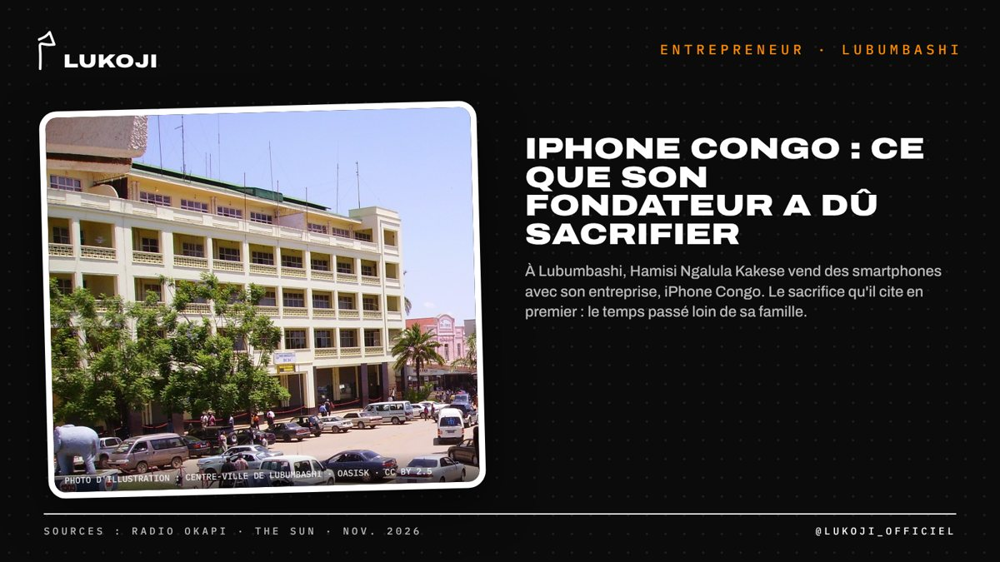

À Lubumbashi, Hamisi Ngalula Kakese a choisi d'entreprendre. Son entreprise, iPhone Congo, vend des smartphones. Le 13 novembre 2026, Radio Okapi l'a reçu dans une émission sur le chômage des jeunes, pour qu'il raconte son parcours, les obstacles qu'il a rencontrés et ce qu'il en a tiré.
Ce qu'il fait
Hamisi Ngalula Kakese est le fondateur d'iPhone Congo, une entreprise de vente de téléphones et d'électronique basée à Lubumbashi, dans le Haut-Katanga. Selon le quotidien nigérian The Sun, l'entreprise ne se limite plus à Lubumbashi : elle s'est installée commercialement dans d'autres endroits de la RDC.
Le marché du smartphone, tout le monde le connaît. Dans chaque ville du pays, on trouve des vendeurs de téléphones, du petit étal au magasin. Se faire un nom sur ce marché, face à autant de concurrents, c'est le défi qu'il a choisi.

Ce que ça lui a coûté
Dans l'entretien rapporté par The Sun, il ne parle pas d'abord d'argent. Le sacrifice qu'il cite parmi les plus lourds, c'est le temps passé loin de sa famille pendant qu'il construisait son entreprise.
Il cite aussi deux pressions qui arrivent quand une entreprise commence à se voir : les critiques et la rivalité. Plus ton nom circule, plus on parle de toi, et pas toujours en bien.
Il dit enfin vouloir que l'impact de son entreprise aille au-delà des résultats commerciaux.
Pourquoi son histoire parle aux jeunes
Radio Okapi a choisi de donner la parole à un entrepreneur dans une émission consacrée au chômage des jeunes. Le message est simple : quand l'emploi ne vient pas, certains le créent. Mais ceux qui l'ont fait parlent rarement de ce que ça coûte. Hamisi Ngalula Kakese, lui, en parle.
Ce que tu peux en tirer
- Compte le temps, pas seulement l'argent. Avant de lancer ton projet, demande-toi combien d'heures par semaine il va te prendre, et à qui tu vas les retirer.
- Prépare-toi aux critiques. Elles arrivent souvent au moment où ton entreprise commence à marcher. Ce n'est pas forcément un signe que tu fais fausse route.
- Un marché plein de vendeurs n'est pas un marché fermé. Les téléphones se vendent partout. Ce qui fait la différence, c'est la confiance que les clients ont dans ton nom.
- Grandis ville par ville. iPhone Congo est partie de Lubumbashi avant d'aller ailleurs. Une base solide d'abord, l'expansion ensuite.
Entreprendre, c'est aussi accepter de payer un prix que personne ne voit sur ton bilan. Le tien, tu le connais déjà ?
Sources : Radio Okapi, émission « 100 % jeunes » (13 novembre 2026) ; The Sun, Nigeria (novembre 2026).
LUKOJI · Innover · Créer · Impacter